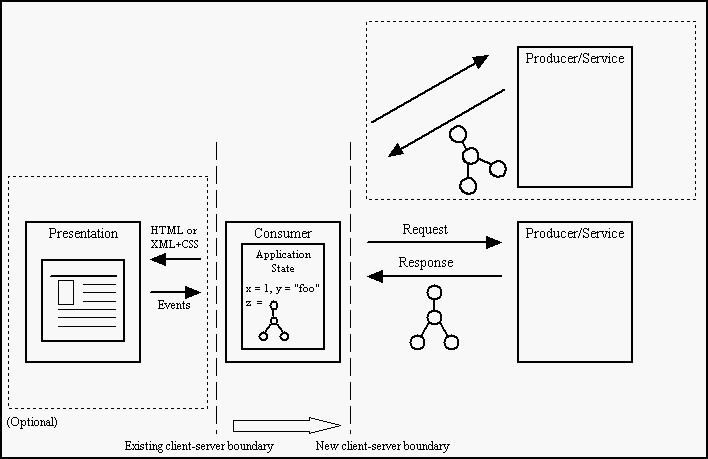

Web Applications - A Thicker Client Model
A web application can very generally be defined as consisting of a consumer requesting data or services from a producer. While it isn't necessary that the consumer be browser-based, most existing web applications, ranging from consumer e-commerce applications to development tools to alternatives to standard desktop services, consist of a thin, largely stateless client communicating over a HTTP pipe to a server managing the session, in turn connected to a back-end data source. The model for data transfer and state management is strongly dictated by the constraints of both the client container and the pipeline. Specifically, the inability to store structured application state on the client and the request-response page delivery paradigm disallow web applications authors from making standard efficiency and resource management tradeoffs.For existing web applications, where the consumer is browser-based, some of the drawbacks include:
- Most content sent from the server to the client is presentational. While the promise of XML is a strong separation of data from presentation, current client implementations of XML still maintain a fairly strong tie between the two. Direct application of CSS to XML still places strong presentational semantics on the data. Arbitrary transformation of an XML document via a transformation language such as XSL does allow for a larger separation between data and presentation, as does embedded XML data within a presentational container such as HTML. However, both still work under a model where data is largely sent as part of and for the sole purpose of driving presentation.
- Little state is maintained on the client side between pages in an application. The lack of a mechanism to persist structured application data on the client forces web applications to store state on the server. This can result in retransmission of data for each page in an application. Both server side storage of state and retransmission have obvious impact on issues of scalability.
- The request-response model currently equates client requests for data (via HTTP GET) and client submission of data (via HTTP POST) with a page change and, consequently, a state change. Furthermore, posting of data is only achieved through the narrow mechanism of form submission. This places strong restrictions on the control and data flow of the web application and mandates a very specific user interaction model.
- Since most presentational decisions are made before a web application even gets to the client, there is little scope for scaling the presentation to match the capabilities of the client. In a heterogeneous environment, with client devices of varying capabilities, the current model only allows scaling to occur at the presentational level e.g. proxy-based conversion of HTML to WML. A more powerful model would be one that not only allows presentational decisions to be made on the client (or on a dedicated proxy), but also allows for scaling of the data pulled from the server, based on the needs of the client.
- The current model generally ties an application to a specific host server. Not only does the single server have to maintain session state, it is generally the source of all data received by the client. This precludes a model where a client may request and combine data from various, possibly disparate data sources.
The Model
A web application can be thought of as any stateful consumer of data. It has the following features:
- It can arbitrarily request data from one or more producers or services and can asynchronously receive a response. Note that a request for data may itself contain data posted by the consumer.
- It can store application state (either code or data) for the duration of its life. This state storage is not required to be correlated with requests for data.
- It may, but is not required to, have a presentation associated with it.
This document describes a set of features that allow greater flexibility in the positioning of the client-server boundary for a web application. Specifically, the stateful consumer of data should be an entity that may be implemented completely on a web client or split between client and server - the application container can be the client or live on both sides of the client-server boundary. With these features, a browser-based consumer will be able to do the following:
- Make asynchronous requests for data that are not tied to a presentation change. The data requests and responses will travel over HTTP, but may be either free-form XML data exchanges or more structured and typed RPC calls.
- Build and manipulate presentation using the DOM and/or more declarative style mechanisms.
- Respond to user events and manipulate application state based on these interactions using the DOM event model.
- Post data asynchronously to a server, again not necessarily tying the data exchange to a presentation change.
- Save state across presentational changes (or persistently across sessions of the applications) using a mechanism similar to cookies, but for more structured XML data.
- Provide a manifest that describes the lifetime of the application, allowing the browser to maintain code lifetime across multiple pages.
XML Data Pipe
Any web application should be able to exchange data with a data producer or service. The request for data can take one of the following forms:- An asynchronous request for the contents of a URL where the returned data is treated as an XML stream. The result of the request is handed back to the consumer as a DOM document. There are no constraints on the XML that comes across the pipe - it can represent data of an arbitrary schema. The request is in the form of an HTTP GET operation.
- A variant of this allows the consumer to provide a DOM document or fragment as part of the request. The HTTP transaction is now in the form of a POST and the serialized version of the XML document or fragment is part of the body of the HTTP transaction.
- The request can be in the form of a RPC call. SOAP lays the groundwork for specifying the contents of the HTTP packet that is sent across the pipe. In the generic case, the RPC call can be synchronous or asynchronous, though depending on the threading model of the host container, only one option may be viable.
- [In the long run, we may want to allow handling of the request and the response to be pluggable at multiple levels. Specifically, the application may want to interact directly at the protocol level or above it, dealing with the body of the request as a stream, string or DOM document. Conceptually this is already possible in Mozilla - a signed script may already register a protocol handler or provide a stream listener for a URL load.]
- A programmatic way of triggering an asynchronous URL load. The load request will include a handler which is invoked when the load is complete. A parameter to the handler will be the result of the request in the form of a DOM document. A variant of the load call would also allow posting of XML data, again in the form of a DOM Document. DOM Level 3 will include a set of interfaces to deal with loading and saving of documents and may be the source of an API to trigger such a load.
- A mechanism through which a SOAP-based RPC call can be made. In the absence of a standard IDL representation of the object being invoked (note that IBM has proposed an XML-based IDL language), the RPC call would need to be made in a fairly generic manner i.e. through a generic call object as opposed to a complete representation of the server-side object. A SOAP implementation that uses such a generic calling scheme (including argument marshalling and basic object serialization) exists for Java and one will undoubtedly exist for COM clients. In Mozilla, a JavaScript implementation of a similar XML-RPC scheme was recently submitted.
Both IE and Mozilla currently have non-standard mechanisms for loading XML data via script. IE provides ways of both loading and posting XML documents using a URL, as well as mechanisms for invoking an XML parser using a string. Mozilla now has a mechanism for just loading XML documents.
State Management
The page-based content delivery paradigm used in browsers makes state management a problem for web applications because:- Code (scripts or Java applets) on a page is unloaded when the next page is delivered. The only mechanism for maintaining client-side state for the lifetime of a web application instance is string-based cookies. As a result, most session state for existing applications is maintained on the server.
- There is no notification to the server-side maintainer of state of when the client leaves the web application. In other words, the boundaries of the web application are not strongly defined. As a result, session state often needs to be maintained for significantly longer than is actually necessary.
With the features described in the previous section, a browser-resident web application does not have to be page based. Since it can request data and change presentation at any point, its entire lifetime can be bounded by a single browser page. A single-paged application can also persist structured data or post data back to a server-resident component when it is unloaded.
HTML framesets can currently be used to allow a web application to have resident code across multiple browser pages. The resident code is contained in a single frame of the frameset, while paged components of the application are contained in one or more other frames. These presentational pages can be used as templates, filled in with application data from the resident frame during or after initial page construction - in some sense, ASPs on the client-side. In this way, an application can still use a paged user interaction model, while maintaining the code lifetime characterstics of a single-paged application.
The ability of an application to have client-resident code for the duration of its life could be formalized in a manner that doesn't require the use of HTML frames (and could be applied to code written in either a scripting language or Java). One possibility is for the application to provide a manifest when it is downloaded. The manifest would contain both a reference to the code that would be resident and a list of URLs or a domain across which the code would remain resident. The application would be able to register for load and unload events for both itself and the individual pages within its manifest. The URLs in the manifest would be allowed under the same security constraints as cross-frame script access for existing applications. Code contained within the individual pages of the application would be able to address the resident code and the resident code would have access to the DOM document representing the page. [The manifest could also hold XML-based IDL for any server-side objects visible to the application.]
Related XML Standards
The implementation of several existing standards, while not strictly necessary, would make application development in this model substantially easier.- XSLT - An application can create or modify a presentation based on data received over the XML data pipe by using the DOM to both traverse the document representing the data and modify the document representing the presentation. While this programmatic transformation of data to presentation is very flexible, the ability to apply an XSL transform to all or part of the data document can simplify the construction of the presentational tree. XSL transforms can also be used to convert end-user specified presentational information back into a schema that can be stored or posted.
- XPath - XPath provides a way of querying and addressing elements of a data document that can be more powerful than those available in the DOM core.
- XForms - The XForms Working Draft describes a way of specifying a data model for form posting, as well as a mechanism for binding presentational element values back to the data model.